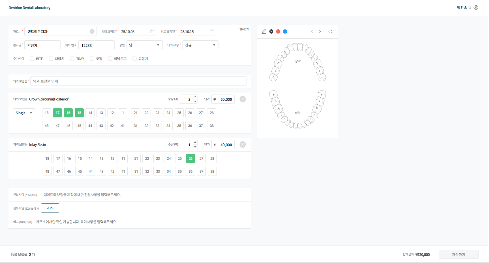
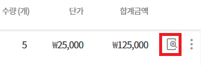
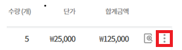
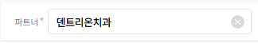
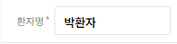
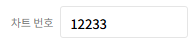
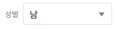
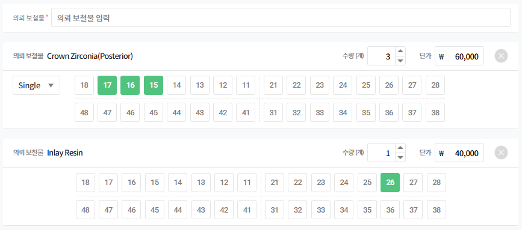
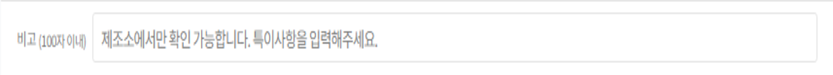

1.의뢰서 수정
이 화면에서는 등록된 의뢰서의 정보를 수정할 수 있습니다.
[의뢰서 수정이 가능한 화면]
1. [의뢰서 관리] : 수정할 의뢰서 검색 후 [의뢰서 수정] 버튼 클릭 시 수정이 가능합니다.
2. [거래명세서 관리] : 거래명세서 상세 보기에서 수정할 의뢰서 검색 후 [수정] 버튼 클릭 시 수정이 가능합니다.

1-1. 의뢰서 관리
1-1-1. 상세보기 수정
상세 보기 버튼을 클릭하면 해당 의뢰서의 상세 내용을 확인 후 수정할 수 있습니다.

1-1-2. 더보기 수정
상세 보기 하지 않아도 목록 화면에서 바로 의뢰서 수정 화면을 사용할 수 있습니다.

1-2. 거래명세서 관리
1-2-1. 거래명세서 상세보기
해당 파트너의 거래명세서 목록에서 수정할 의뢰를 찾아서 바로 의뢰서 수정이 가능합니다.
1-3. 의뢰서 수정
설명
의뢰의 모든 항목이 수정이 가능합니다.
[정산 완료] 상태 의뢰는 파트너 변경 외에는 수정이 가능합니다.
[결제 관리]에서 결제가 완료된 거래명세서에 포함 되있는 의뢰는 수정이 불가합니다.
수정 사항이 있는 경우 [저장하기] 버튼이 활성화 됩니다.
의뢰서 수정 내역이 있는 경우, 수정 시점과 이전 의뢰서를 히스토리에서 확인할 수 있습니다.
1-3-1. 항목별 설명
[파트너]
파트너 변경이 가능합니다.
파트너 변경 시 해당 파트너 거래명세서에서 의뢰서가 자동으로 제외됩니다.
제외된 의뢰서는 변경한 파트너 거래명세서에 자동으로 추가되지 않습니다.
변경한 파트너 거래명세서에서 [의뢰서 추가]기능을 통해 의뢰서를 따로 추가해야됩니다.

[의뢰 요청일]
‘접속일(오늘 날짜)’ 이후의 날짜는 선택할 수 없습니다.
변경한 의뢰 요청일이 파트너 거래명세서 생성 기간에 속하지 않는 경우 자동으로 거래명세서에서 제외되지 않습니다.
의뢰 요청일 변경 시 거래명세서에서도 자동으로 수정됩니다.
[완료 요청일]
의뢰 요청일의 이후 날짜만 선택할 수 있습니다.
변경한 완료 요청일이 파트너 거래명세서 생성 기간에 속하지 않는 경우 자동으로 거래명세서에서 제외되지 않습니다.
완료 요청일 변경 시 거래명세서에서도 자동으로 수정됩니다.
[환자명]
한글, 영문, 숫자 입력 가능하며 공백 포함 최대 20자까지 입력할 수 있습니다.

[차트번호]
의뢰하는 환자의 차트 번호를 수정할 수 있습니다.

[성별]
의뢰하는 환자의 성별을 수정할 수 있습니다.

[의뢰 유형]
신규 유형에서 REMAKE, REPAIR, ETC로 수정하는 경우 의뢰 보철물 단가가 0원으로 변경됩니다.
REMAKE, REPAIR, ETC 유형에서 신규로 수정하는 경우 의뢰 보철물 기본 설정된 단가로 변경됩니다.

[추가 사항]
보철물 제작에 필요한 항목을 수정할 수 있습니다.
[의뢰 보철물]
의뢰 보철물을 추가 또는 삭제가 가능합니다.
의뢰 보철물의 치식을 수정할 수 있습니다.
의뢰 보철물의 수량 또는 단가를 수정할 수 있습니다.

의뢰 보철물 수정 시 주의 사항
Q1.작업자가 공정 입력을 완료 후 의뢰 보철물 삭제하는 경우
A1.공정 데이터는 남지만, 의뢰 보철물명이 “삭제된 보철물입니다.” 라는 문구로 대체됩니다.
Q2.작업자가 공정 입력을 완료 후 의뢰 보철물 수정하는 경우
A2.공정 데이터도 남고, 의뢰 보철물명도 정상적으로 보여집니다.
[전달 사항]
치아 쉐이드, 섹션 분리 등 보철물 제작에 필요한 정보를 자유롭게 수정 및 추가할 수 있습니다.
전달 사항은 의뢰서 출력 시 노출되는 항목입니다.
[첨부 파일]
치아 쉐이드 사진, 구강 스캔 파일 등 보철물 제작에 필요한 파일을 첨부할 수 있습니다.
여러 파일을 업로드 할 수 있으며, 총 용량은 최대 500MB 까지 가능합니다.
[비고]
제조소에서만 확인이 가능한 특이사항을 자유롭게 수정 및 추가할 수 있습니다.
